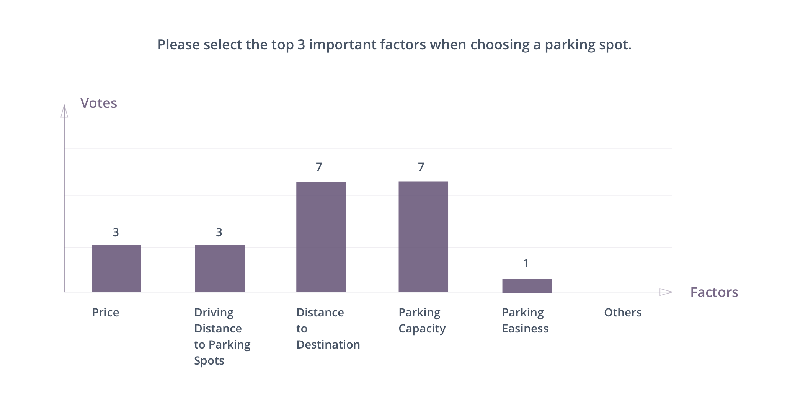
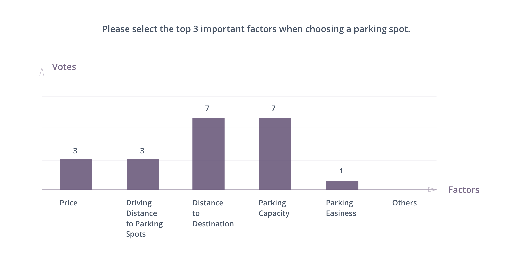
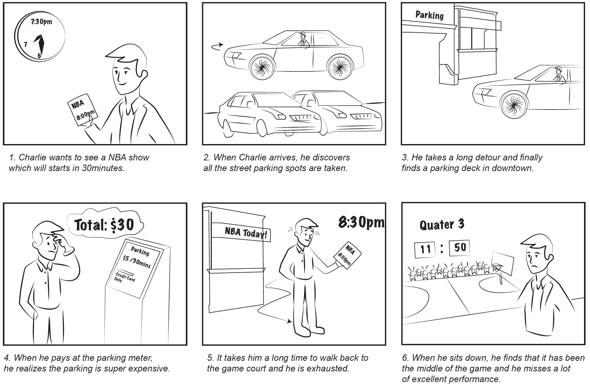
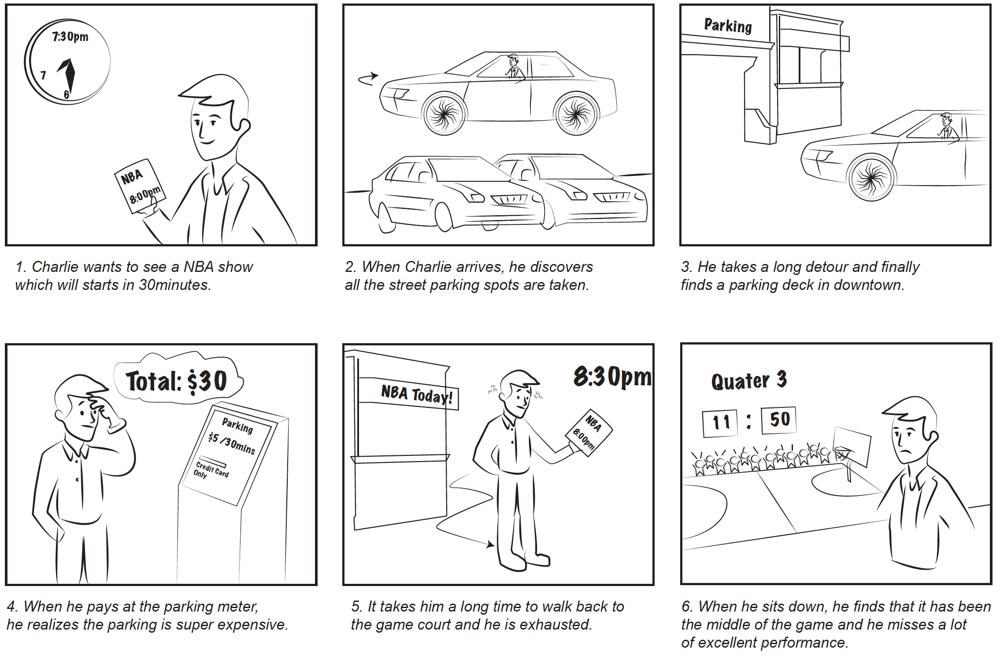

Park Alloter
I acted as a UX Designer lead on CS8803 Mobile Application and Service Design class, colloborating with four software engineers, Reza, Mianzhen, Seunghyun and Duan. We aims at utilizing mobile app technology to help drivers make a wise and satisfying parking decision with the user updatable parking database, which includes both street parking and parking lots. We went through a lean UX process with constant feedback and iteration on our product.
I acted as a UX Designer lead on CS8803 Mobile Application and Service Design class, colloborating with four software engineers, Reza, Mianzhen, Seunghyun and Duan. We aims at utilizing mobile app technology to help drivers make a wise and satisfying parking decision with the user updatable parking database, which includes both street parking and parking lots. We went through a lean UX process with constant feedback and iteration on our product.

The Challenge
Difficulty to Park Downtown
We aim to improve the user experience in this process by allowing users to better control their decisions ahead of time rather than making a random lucky one at their destination.
Through our brainstorming and pilot research, we discovered that drivers are lack of detailed parking spots information to help them know and compare the parking alternatives. Informations like detailed parking fee, operation time, remaining available spots relies on the drivers to discover until they arrive at the parking lot.
We aim to improve the user experience in this process by allowing users to better control their decisions ahead of time rather than making a random lucky one at their destination.
Through our brainstorming and pilot research, we discovered that drivers are lack of detailed parking spots information to help them know and compare the parking alternatives. Informations like detailed parking fee, operation time, remaining available spots relies on the drivers to discover until they arrive at the parking lot.
User Research
Semi-structured Interviews
I conducted 5 semi-structured interviews with drivers to collect qualitative feedback from users to dig deep into their behaviors. View Orginial Interview Script and Data
Questions we asked include
What is discovered is that
A follow-up questions was released, 7 participants respond to the short survey and prioritize the top three important factors of parking spots. 
I conducted 5 semi-structured interviews with drivers to collect qualitative feedback from users to dig deep into their behaviors. View Orginial Interview Script and Data
Questions we asked include
- When do you need to find or search parking spots?
- How do you determine where to park?
- What difficulties do you have in finding the parking spots?
- What app do you use to park?
What is discovered is that
- Drivers are in need of parking spots informations like entrance guidance, parking capacity, distance to destination, the receipt place and parking price for better parking lot alternatives;
- Drivers won’t search for parking lots if they know there will be a large amount of parking spot around their destination like the supermarkets or malls.
- Drivers tend to search for park when they are not familiar with the destination or aware of the shortage. we discovered that users are in need of parking lot information if they are unfamiliar with their destination or if they are aware there are shortage of parking place, like on a road trip or participate a game event.
A follow-up questions was released, 7 participants respond to the short survey and prioritize the top three important factors of parking spots. 
User Persona
Based on our user interview data, I identified downtown drivers as our priority users and discussed detailed user behaviors with our software enginers.

Based on our user interview data, I identified downtown drivers as our priority users and discussed detailed user behaviors with our software enginers.
User Storyboard
I generated a user storyboard to concentrate information from user interviews to discuss identified painpoints with our development team.

I generated a user storyboard to concentrate information from user interviews to discuss identified painpoints with our development team.

Market Analysis
Through semi-structured interview and marketing analysis, we discovered that there are several competitor apps that drivers may use, we conducted a feature comparison and discuss features our apps should have.

Through semi-structured interview and marketing analysis, we discovered that there are several competitor apps that drivers may use, we conducted a feature comparison and discuss features our apps should have.
Direction Discussion
Define Use Cases
We define several use cases that our group will first focused on solving. While I worked on wireframe, our software engineers started validate the fidelity of these scenarios.
We define several use cases that our group will first focused on solving. While I worked on wireframe, our software engineers started validate the fidelity of these scenarios.
- Use Case 1 - Find an avaible street parking spot around downtown DMV.
- Use Case 2 - Identify the cheapest parking lot which are near to Piedmont Park Fountain when street parking are filled.
- Use Case 3 - It is 7:30pm and the FOX show will starts at 8:00 pm and ends at 10:00 pm, identify a place to park near to Fox Theater.
- Use Case 4 - Pay the parking fee.
Design Iteration
Wireframe and User Motivation System
I generated our first wireframe to have a group discussion on the features, flow about our main interface.
I generated our first wireframe to have a group discussion on the features, flow about our main interface.
Wireframe and Evaluation
Medium Fidelity and Evaluation
Communicating with our technology team, we discovered that street parking, although highly valued by our users, are underevaluated. We lack API to Thus, we decided to use a user report system to fill up this gap. In utilizing user report, user motivation is crucial where we have to introduce a credit system.
Communicating with our technology team, we discovered that street parking, although highly valued by our users, are underevaluated. We lack API to Thus, we decided to use a user report system to fill up this gap. In utilizing user report, user motivation is crucial where we have to introduce a credit system.
High Fidelity Prototype